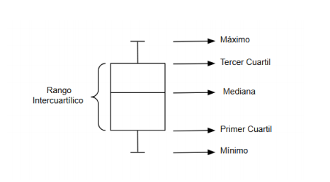
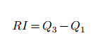
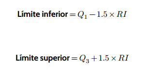

Diagramas de caja sin valores atípicos
Las medidas de posición nos permiten realizar un gráfico llamado diagrama de caja (o boxplot).
Pasos para construirlo:
- Construye una caja (vertical u horizontal) cuyos laterales se correspondan con el primer y tercer cuartil (𝑄1 y 𝑄3). Esta caja abarca el 50% de los datos.
- Marca la mediana dentro de la caja con un segmento.
- Dibuja los segmentos (bigotes) que van hasta los valores mínimo y máximo.

Diagramas de caja con valores atípicos
Cuando en un conjunto de datos tenemos valores que se desvían significativamente del resto, decimos que esos valores son atípicos.
Podemos detectar estos valores usando el rango intercuartílico (RI), que se calcula como:

Para saber si un dato es atípico, se marcan dos límites:
Si algún valor queda fuera de estos límites, se considera un valor atípico.
Construcción del diagrama con valores atípicos:
- Dibuja la caja con los cuartiles 𝑄1 y 𝑄3.
- Marca la mediana (𝑄2) dentro de la caja
- Calcula los límites para ver si hay valores atípicos
- Representa los valores fuera de estos límites con un punto o asterisco para representar los valores atípicos si los hay.
- Dibuja los bigotes extendiéndolos hasta el valor más extremo del conjunto que no sea un valor atípico
Interpretación de diagramas de caja
El diagrama de caja permite ver de un vistazo la dispersión de los datos y la presencia de valores atípicos, facilitando la interpretación de conjuntos de datos de manera rápida y visual.
Tamaño de la caja:
- Una caja más grande indica que los datos están más dispersos alrededor de la mediana.
- Una caja más pequeña indica que los datos están más concentrados.
Longitud de los bigotes:
- Bigotes largos muestran que hay una mayor dispersión en los valores extremos.
- Bigotes cortos indican que la mayoría de los datos están cerca de la caja y no hay tantos valores alejados.
Valores atípicos: Los puntos fuera de los límites de los bigotes representan valores atípicos, que pueden indicar observaciones excepcionales
Graficadora de diagramas de caja
Para poder graficar un diagrama de cajas y que puedas comprobar si has hecho bien ejercicios propios, añado un recurso bastante útil:
https://www.alcula.com/es/calculadoras/estadistica/diagrama-de-caja/